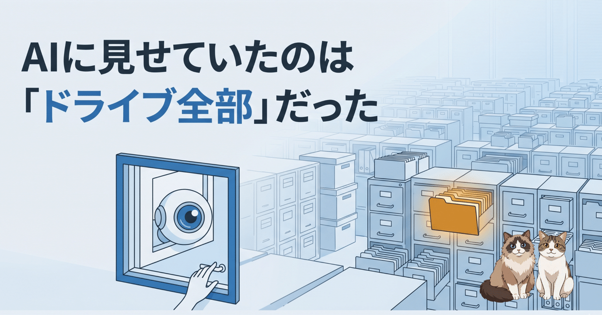

前回、Claude Code が「これは攻撃です」と幻覚して仕事を拒否した話を書きました。あれを調べている最中に、もうひとつ引っかかったことがあって、これはこれで別問題だな、と思ったので分けて書いておきます。Google ドライブの連携（コネクタ／MCP）を、AI にどこまで見せているのか、という話です。
幻覚した側の AI が、暴走の途中で Google ドライブを検索したとき、出てきたファイルの中に、自分のものじゃない、何年も前に一度だけ共有フォルダを一緒に使った相手の自己紹介ファイルが混ざっていました。氏名も、年齢も、出身地も載っているやつです。
あとから生ログを一行ずつ追っていて、ずいぶん前に一度だけ一緒に働いた同僚の名前がぽろっと出てきたときは、正直ぞっとしました。こっちは自分の情報を調べさせたつもりだったのに。
そのとき AI が投げた検索ワード自体が的外れ（前回の幻覚の産物）だったので、出てきた中身もてんでバラバラでした。卒業研究の資料だったり、誰かの自己紹介だったり。よく見て気づいたのは、ファイルの持ち主（owner）です。半分は自分のアカウント、もう半分は、明らかに別人のメールアドレスになっていた。
つまり AI は、自分のドライブの中だけじゃなく、自分が「見られる」ファイルを全部、検索の対象にしていた、ということです。
最初は「コネクタが変なものを引っ張ってきたな」と思いました。でも、調べると違う。これは Google ドライブの検索の、ごく普通の挙動でした。
ドライブの全文検索は、あなたが所有するファイルだけを見るわけじゃありません。
これも全部ひっくるめて、検索の対象にします。何年も前に共有フォルダを一緒に使っていれば、その中のファイルは、今もあなたのアカウントから到達できる。だから、曖昧なキーワードを 1 つ投げただけで、古い共有ファイルが芋づる式に出てくる。
問題は、その「あなたが見られる範囲」が、自分で思っているよりずっと広いこと。そして、その広い範囲のどこを覗くかを、AI のさじ加減に委ねていることです。
普段は、こちらが「この前のあのファイルを見て」と具体的に頼むから、変なことは起きません。狙ったものだけが返ってくる。でも前回みたいに、AI が幻覚して的外れな検索を勝手に投げた瞬間、その広さが一気に効いてきます。何年も前の、他人の、氏名や連絡先が書かれたファイルが、ぽろっと画面に出てくる。自分が頼んでもいないのに。
扉（コネクタ）の出来は、悪くないんです。問題は、その扉の向こうが、あなたのドライブの歴史まるごと、という広い部屋になっていること。扉が立派かどうかより、扉の奥に何が置いてあるか、のほうが効く。
もうひとつ、これはプライバシーとは別の角度の話です。見える範囲が広いと、困るのは「他人のファイルが出てくる」ことだけじゃありません。
曖昧なキーワードで検索すると、関係ない他人のファイルや、何年も前の古い資料まで、どっさり返ってきます。AI はそれを全部抱え込もうとする。
AI が一度に覚えていられる量（コンテキスト）には限りがあります。いらない情報で埋まれば、肝心の作業に回せる余地がそのぶん狭くなる。しかも、関係ないファイルの断片が混ざると、AI はそっちに引っ張られて、見当違いの方向へ進みやすくなる。今回みたいな幻覚の燃料にもなりかねません。
つまり「見せる範囲を絞る」のは、情報を守るためだけじゃなく、AI に余計なものを食わせて混乱させないためでもある。狭いほうが、速いし、正確になる。
スコープを絞ろうとすると、つい「もっと賢い窓（自前の MCP サーバー）を作って、見える範囲を制御しよう」という方向に行きがちです。実際、自分も一度そっちに走りかけました。
ただ、引っかかったことがあります。公式のコネクタをつなぐとき、同意画面は「特定のファイルにアクセスします」みたいな顔をしている。なのに実際にアプリへ渡される権限には、「ドライブの全ファイルを閲覧できる」ものが含まれている、という指摘があります。つまり公式の窓は、最初からこちらが思うより広く土地を見ている。「このフォルダだけ見て」と頼むのは、あくまでお願いであって、壁じゃない。だから AI が暴走すれば、そのお願いは簡単に飛び越えられてしまう。
じゃあどう絞るか。手はいくつかあって、どれも一長一短です。これがおすすめ、と言い切れるものは無い。
結局、手軽さ・固さ・手間がそれぞれ釣り合わなくて、万人向けの正解は無い。本音を言えば、こんなふうにユーザー側が工夫する前に、コネクタを出している側（Google）が「特定のファイルだけ」をちゃんと厳密にしてくれるのが一番なんですが、そこは祈るしかない。今は、自分の用途に合わせて、この中から手間と相談して選ぶことになります。
前の記事で「外に開く扉は、増やすほど守りが要る」と書きました。今回の件は、その続きみたいなものです。
「スコープを絞る」と聞くと、つい賢い窓を作らなきゃ、と身構える。でも出発点はいつも同じで、「その窓から何を見せるかを、AI 任せにせず自分で決めておく」こと。頼み方で狭めるのか、渡す権限ごと握るのか。手間と相談しながら選べばいい。
そしてもうひとつ。今回そもそものきっかけは、AI が幻覚して的外れな検索を投げたことでした。だから対策も二段構えで、「見せる土地を狭くする」のと「機微なものはファイル ID を指定して、出典をはっきりさせてから読ませる」の両方をやる。範囲を狭め、頼み方を具体的にする。それだけで、今回みたいな事故のほとんどは起きなくなります。
土地を見直す。頼み方を具体的にする。派手なことは何もしていません。そういう地味なところから、整えていこうと思います。